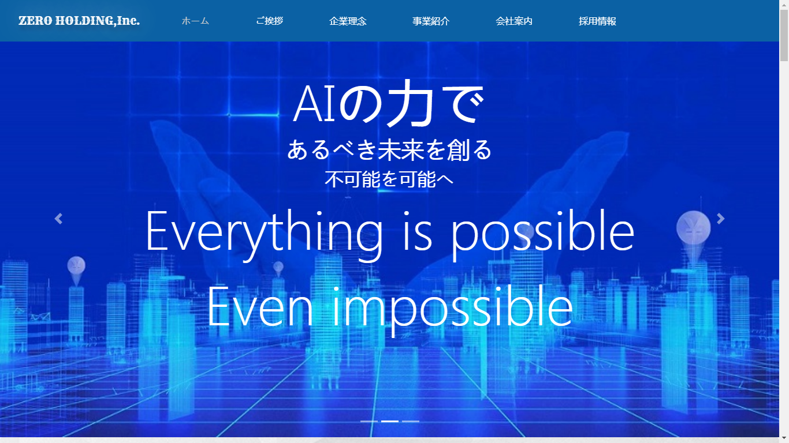
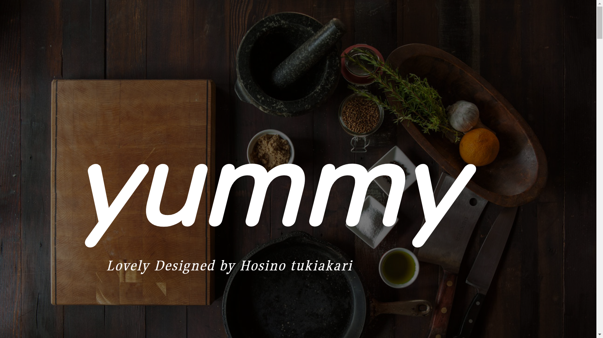
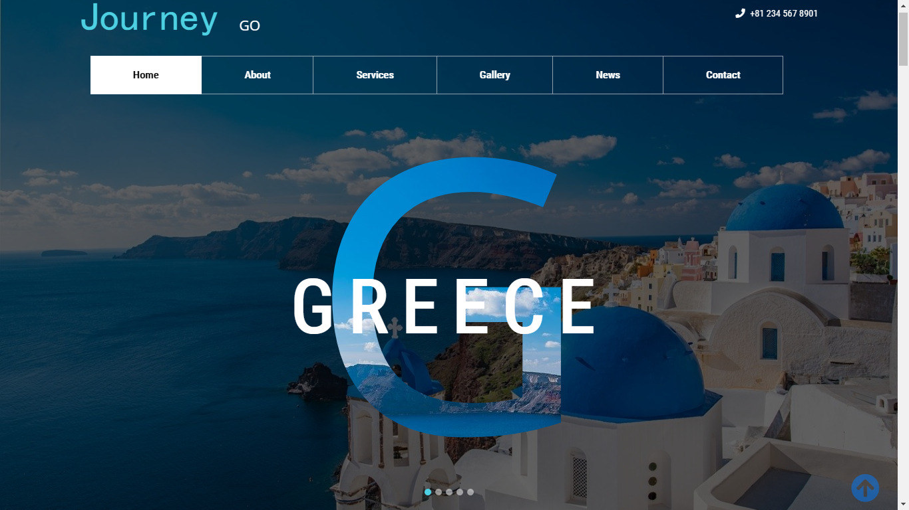

中古車価格設定業務システム
きっかけ:お客様の要望に応じて作ったもの。
担当：Full stack(FrontEnd/BackEnd/Database Design/documenet creation)
開発言語：Django3,Python3,HTML5, CSS3, Bootstrap4, Javascript,Echart,Mysql
開発期間：8ヶ月
詳細宿題QAシステム
きっかけ:中小学生向けて作ったもの。
担当：Full stack(FrontEnd/BackEnd/Database Design/documenet creation)
開発言語：Django3,Python3,HTML5, CSS3, Bootstrap4, Javascript,Echart,Mysql
開発期間：2ヶ月
詳細

ZERO HOLDING,Inc.
きっかけ：AIの魅力を感じてテーマにしてこのサイトを作って、「AIは未来のビジネスや生活には、どんな影響を与えるのでしょうか」という疑問を持って取り組んでいました。
担当：FrontEnd(Logo / Planning / Design / Coding / Contents Creation)
開発言語：HTML5, CSS3, Bootstrap4, Font Awesome
開発期間：1 週間
ウェブレスポンシブ：対応済
詳細Yummy
きっかけ：人は美味しいものを食べれば、元気になれる。良い人生を送るためのご飯の中にどんな謎がありますか。探しながら料理の世界を楽しんでいます。
担当：FrontEnd(Logo / Planning / Design / Coding / Contents Creation)
開発言語：HTML5, CSS3, Bootstrap4, Font Awesome
開発期間：2 週間
ウェブレスポンシブ：対応済
詳細


Journey Go
きっかけ：旅は読書と同じように、小さな自分の世界を大きくする。世界には、六大陸と三大洋があるんけど、行ったことがない場所がたくさんあります。旅行のような感じで、このページを作りました。
担当：FrontEnd(Logo / Planning / Design / Coding / Contents Creation)
開発言語：HTML5, CSS3, Bootstrap4, Font Awesome
開発期間：2 週間
ウェブレスポンシブ：対応済
詳細